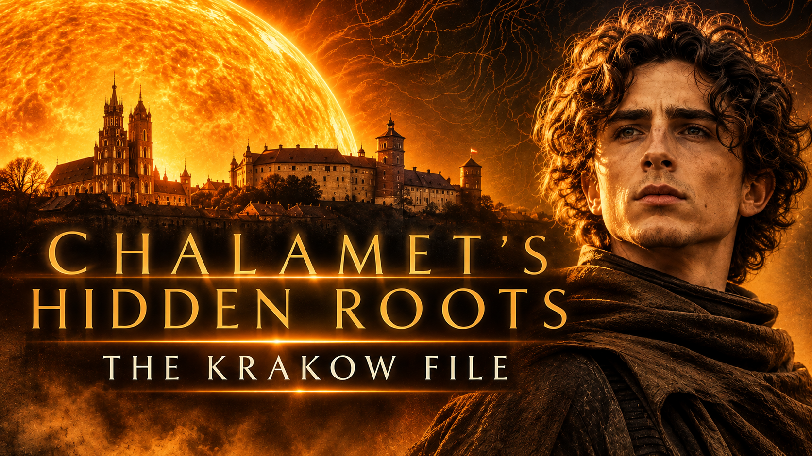

Primary archival reconstruction of the maternal Flender, Kempler, and Gletner lineages across 19th-century Kraków vital registers, census records, and Kazimierz tenement addresses.

The genealogical investigation traces the family roots of actor Timothée Chalamet directly to historical archives in Kraków. Through careful examination of birth, marriage, and census records from the 19th century, we reconstruct the ancestral path of the Flender family in the heart of Galicia.
Pełny dokumentowany opis śledztwa, skany oryginalnych metryk oraz szczegółowe drzewo genealogiczne dostępne są bezpośrednio w opublikowanym studium na blogu badawczym.
Przeczytaj pełny artykuł na blogu ↗